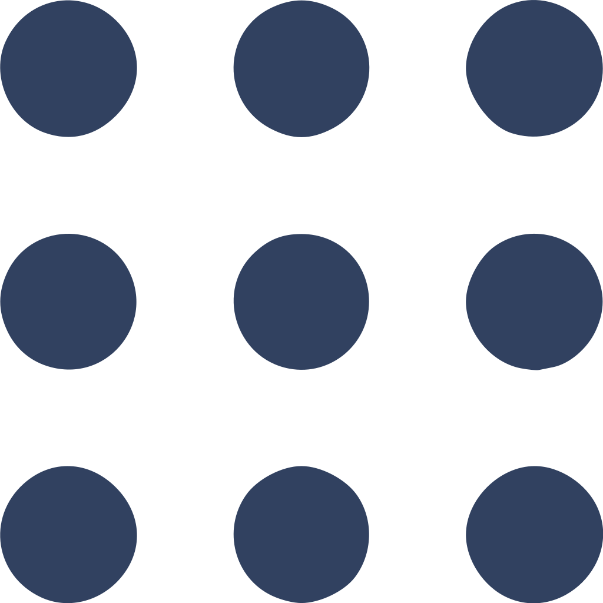

スタンス
今までやってきたこと
を基に次のステージに備える
次に備えて，ピボット的にスキルアップを図る
C-EPS外観検査を盾にする
会社のコード
を写経する (not コンプライアンス違反)
ROS×ML
Web×ML
英語を勉強する
MLは1月1分野
Deep Leaning コーディングメモ
理論まとめ(工事中)
Web技術
MDN web docs
W3School
10 javascript projects
modern javascript
基礎から学ぶvue.js
to do list
tensorflow.js
tensorflow.js
ROS 
ROS.org
研究
browse state-of-the-art
藤吉研究室
原田研究室
内田研究室
長尾研究室
星の本棚
Hello Cybernets
deep learning dataset
ai-scholar.tech
一般
Slide Share
Qiita
Github